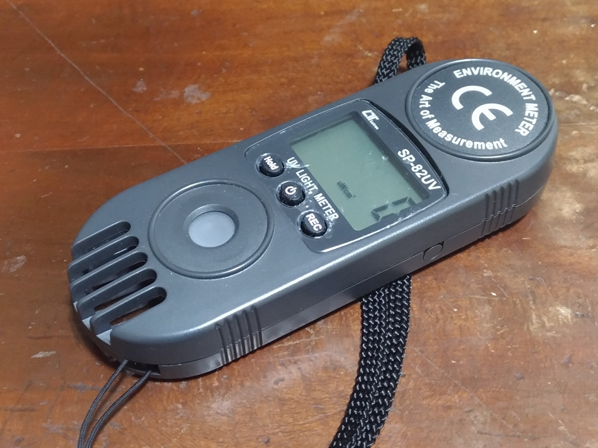

最も紫外線の強い時間帯
それは10時〜15時だと言われます。一日の紫外線の約半分がこの時間帯に降るそうです。 時間帯ごとの紫外線量の変化を実際に調べるべく紫外線強度計を購入、検証しました。
紫外線強度計とは
紫外線測定器やUVチェッカーなどとも呼ばれています。 電源を入れると受光部で紫外線を感知し、数値が画面に表示されます。単位はμW(mW)/cm2。 1平方センチメートルあたりの紫外線量をマイクロワット(ミリワット)で表しています。
今回使用したのは『マザーツール ポケットサイズ紫外線強度計SP-82UV』
選んだポイントは、”測定波長”の広さです。UV-Bの波長域が280〜315nm、UV-Aは315〜400nm。 他社の製品の測定波長が大体290〜390nmなのに対しこの製品では250〜390nmとなっており、 UV-B領域を完全にカバーできています。価格も割安なのでおすすめです。
一日の紫外線量の変化
計測日は2020年11月17日。天候は晴れ。幸い太陽が雲に隠れることはありませんでした。
日陰でも直射日光の50％を被曝するとされるのも併せて検証しています。
※計測方法（受光部に光を直接当てた。日陰では散乱光を取った。）